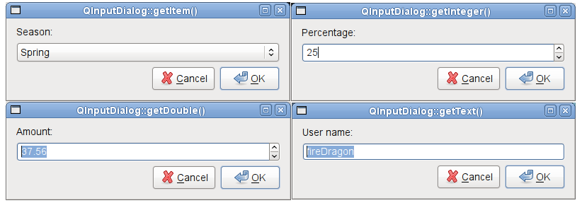

QInputDialog Class Reference
[QtGui module]
该QInputDialog类提供了一个简单方便的对话框，从用户得到一个单一的值。More...
继承QDialog。
Types
Methods
-
__init__ (self, QWidget parent = None, Qt.WindowFlags flags = 0)
-
QString cancelButtonText (self)
-
QStringList comboBoxItems (self)
-
done (self, int result)
-
int doubleDecimals (self)
-
float doubleMaximum (self)
-
float doubleMinimum (self)
-
float doubleValue (self)
-
InputMode inputMode (self)
-
int intMaximum (self)
-
int intMinimum (self)
-
int intStep (self)
-
int intValue (self)
-
bool isComboBoxEditable (self)
-
QString labelText (self)
-
QSize minimumSizeHint (self)
-
QString okButtonText (self)
-
open (self)
-
open (self, QObject receiver, SLOT()SLOT() member)
-
open (self, callable receiver)
-
InputDialogOptions options (self)
-
setCancelButtonText (self, QString text)
-
setComboBoxEditable (self, bool editable)
-
setComboBoxItems (self, QStringList items)
-
setDoubleDecimals (self, int decimals)
-
setDoubleMaximum (self, float max)
-
setDoubleMinimum (self, float min)
-
setDoubleRange (self, float min, float max)
-
setDoubleValue (self, float value)
-
setInputMode (self, InputMode mode)
-
setIntMaximum (self, int max)
-
setIntMinimum (self, int min)
-
setIntRange (self, int min, int max)
-
setIntStep (self, int step)
-
setIntValue (self, int value)
-
setLabelText (self, QString text)
-
setOkButtonText (self, QString text)
-
setOption (self, InputDialogOption option, bool on = True)
-
setOptions (self, InputDialogOptions options)
-
setTextEchoMode (self, QLineEdit.EchoMode mode)
-
setTextValue (self, QString text)
-
setVisible (self, bool visible)
-
QSize sizeHint (self)
-
bool testOption (self, InputDialogOption option)
-
QLineEdit.EchoMode textEchoMode (self)
-
QString textValue (self)
Static Methods
-
(float, bool ok) getDouble (QWidget parent, QString title, QString label, float value = 0, float min = -2147483647, float max = 2147483647, int decimals = 1, Qt.WindowFlags flags = 0)
-
(int, bool ok) getInt (QWidget parent, QString title, QString label, int value = 0, int min = -2147483647, int max = 2147483647, int step = 1, Qt.WindowFlags flags = 0)
-
(int, bool ok) getInteger (QWidget parent, QString title, QString label, int value = 0, int min = -2147483647, int max = 2147483647, int step = 1, Qt.WindowFlags flags = 0)
-
(QString, bool ok) getItem (QWidget parent, QString title, QString label, QStringList list, int current = 0, bool editable = True, Qt.WindowFlags flags = 0)
-
(QString, bool ok) getItem (QWidget parent, QString title, QString label, QStringList list, int current, bool editable, Qt.WindowFlags flags, Qt.InputMethodHints inputMethodHints)
-
(QString, bool ok) getText (QWidget parent, QString title, QString label, QLineEdit.EchoMode mode = QLineEdit.Normal, QString text = QString(), Qt.WindowFlags flags = 0)
-
(QString, bool ok) getText (QWidget parent, QString title, QString label, QLineEdit.EchoMode mode, QString text, Qt.WindowFlags flags, Qt.InputMethodHints inputMethodHints)
Qt Signals
Detailed Description
该QInputDialog类提供了一个简单方便的对话框，从用户得到一个单一的值。
输入值可以是一个字符串，一个数字或一个项目从一个列表中。一个标籤必须设置来告诉他们应该进入的用户。
提供了四个静态的便利功能：getText（ ）getInt（ ）getDouble（）和getItem（ ） 。所有的功能都可以以类似的方式被使用，例如：
bool ok;
QString text = QInputDialog.getText(this, tr("QInputDialog.getText()"),
tr("User name:"), QLineEdit.Normal,
QDir.home().dirName(), &ok);
if (ok && !text.isEmpty())
textLabel->setText(text);
该ok变量被设置为True，如果用户点击OK否则它被设置为False 。

该Standard Dialogs示例显示了如何使用QInputDialog以及其他内置Qt对话框。
Type Documentation
QInputDialog.InputDialogOption
此枚举指定影响的输入对话框的外观和感觉的各种选项。
| Constant |
Value |
Description |
| QInputDialog.NoButtons |
0x00000001 |
不显示OK和Cancel按钮。 （有用的“现场对话” 。 ） |
|
QInputDialog.UseListViewForComboBoxItems
|
0x00000002 |
使用QListView而不是一个不可编辑QComboBox用于显示设置的项setComboBoxItems（ ） 。 |
这个枚举被引入或修改的Qt 4.5 。
该InputDialogOptions类型是一个typedef为QFlags\u003cInputDialogOption\u003e 。它存储InputDialogOption值的或组合。
See also options，setOption（）和testOption（ ） 。
QInputDialog.InputMode
该枚举描述输入的不同的模式，可以选择对于该对话框。
| Constant |
Value |
Description |
| QInputDialog.TextInput |
0 |
用于输入文本字符串。 |
| QInputDialog.IntInput |
1 |
用于输入整数。 |
| QInputDialog.DoubleInput |
2 |
用于输入浮点数与双精度的准确性。 |
这个枚举被引入或修改的Qt 4.5 。
See also inputMode。
Method Documentation
QInputDialog.__init__ (self, QWidget parent = None, Qt.WindowFlags flags = 0)
该parent的说法，如果不是没有，原因self通过Qt的，而不是PyQt的拥有。
构造一个新的输入对话框与给定parent和窗口flags。
此功能被引入Qt的4.5 。
QString QInputDialog.cancelButtonText (self)
QStringList QInputDialog.comboBoxItems (self)
QInputDialog.done (self, int result)
从重新实现QDialog.done（ ） 。
关闭对话框，并将其结果代码result。如果显示此对话框exec_（ ） ， （）完成将导致本地事件循环来完成，并exec_（ ）返回result。
See also QDialog.done（ ） 。
int QInputDialog.doubleDecimals (self)
float QInputDialog.doubleMaximum (self)
float QInputDialog.doubleMinimum (self)
float QInputDialog.doubleValue (self)
(float, bool ok) QInputDialog.getDouble (QWidget parent, QString title, QString label, float value = 0, float min = -2147483647, float max = 2147483647, int decimals = 1, Qt.WindowFlags flags = 0)
静态方便的功能，从用户得到一个浮点数。
title是显示在对话框的标题栏中的文本。label是显示给用户的文本（它应该说些什么应该输入） 。value是该行编辑将被设置为默认的浮点数。min和max是最低和最高值，用户可以选择。decimals是的小数位数可能会有的最大数量。
If ok非空， *ok将被设置为True，如果用户按下OK并为False ，如果用户按下Cancel。该对话框的父parent。该对话框将是模式，并使用小工具flags。
该函数返回已被用户输入的浮点数。
使用这个静态函数是这样的：
bool ok;
double d = QInputDialog.getDouble(this, tr("QInputDialog.getDouble()"),
tr("Amount:"), 37.56, -10000, 10000, 2, &ok);
if (ok)
doubleLabel->setText(QString("$%1").arg(d));
Warning:不要删除parent在该对话框的执行。如果你想这样做，你应该用一个自己创建的对话框QInputDialog构造函数。
See also getText（ ）getInt（）和getItem（ ） 。
(int, bool ok) QInputDialog.getInt (QWidget parent, QString title, QString label, int value = 0, int min = -2147483647, int max = 2147483647, int step = 1, Qt.WindowFlags flags = 0)
静态方便的功能，从用户得到的整数输入。
title是显示在对话框的标题栏中的文本。label是显示给用户的文本（它应该说些什么应该输入） 。value是默认的整数，它的纺纱器将被设置。min和max是最低和最高值，用户可以选择。step是通过该值的变化作为用户的数量按压箭头按钮来递增或递减的值。
If ok非空*ok将被设置为True，如果用户按下OK并为False ，如果用户按下Cancel。该对话框的父parent。该对话框将是模式，并使用小工具flags。
如果成功，该函数返回已被用户输入的整数;失败，返回初始value。
使用这个静态函数是这样的：
bool ok;
int i = QInputDialog.getInt(this, tr("QInputDialog.getInteger()"),
tr("Percentage:"), 25, 0, 100, 1, &ok);
if (ok)
integerLabel->setText(tr("%1%").arg(i));
Warning:不要删除parent在该对话框的执行。如果你想这样做，你应该用一个自己创建的对话框QInputDialog构造函数。
此功能被引入Qt的4.5 。
See also getText（ ）getDouble（）和getItem（ ） 。
(int, bool ok) QInputDialog.getInteger (QWidget parent, QString title, QString label, int value = 0, int min = -2147483647, int max = 2147483647, int step = 1, Qt.WindowFlags flags = 0)
(QString, bool ok) QInputDialog.getItem (QWidget parent, QString title, QString label, QStringList list, int current = 0, bool editable = True, Qt.WindowFlags flags = 0)
静态方便的功能，让用户从一个字符串列表中选择一项。
title是显示在对话框的标题栏中的文本。label是显示给用户的文本（它应该说些什么应该输入） 。items是被插入到组合框的字符串列表。current是它应该是当前项的项的数目。inputMethodHints是输入法的提示，如果ComboBox可编辑和输入法被激活，将被使用。
If editable诚然，用户可以输入自己的文字，否则用户只能选择现有的项目之一。
If ok非空*a确定将被设置为True，如果用户按下OK并为False ，如果用户按下Cancel。该对话框的父parent。该对话框将是模式，并使用小工具flags。
这个函数返回当前项的文本，或者如果editable是真的，组合框的当前文本。
使用这个静态函数是这样的：
QStringList items;
items << tr("Spring") << tr("Summer") << tr("Fall") << tr("Winter");
bool ok;
QString item = QInputDialog.getItem(this, tr("QInputDialog.getItem()"),
tr("Season:"), items, 0, false, &ok);
if (ok && !item.isEmpty())
itemLabel->setText(item);
Warning:不要删除parent在该对话框的执行。如果你想这样做，你应该用一个自己创建的对话框QInputDialog构造函数。
See also getText（ ）getInt（）和getDouble（ ） 。
(QString, bool ok) QInputDialog.getItem (QWidget parent, QString title, QString label, QStringList list, int current, bool editable, Qt.WindowFlags flags, Qt.InputMethodHints inputMethodHints)
(QString, bool ok) QInputDialog.getText (QWidget parent, QString title, QString label, QLineEdit.EchoMode mode = QLineEdit.Normal, QString text = QString(), Qt.WindowFlags flags = 0)
静态方便的功能，从用户得到的字符串。
title是显示在对话框的标题栏中的文本。label是显示给用户的文本（它应该说些什么应该输入） 。text是这是摆在该行的编辑默认文本。mode是回波模式的行编辑将使用。inputMethodHints是输入法的提示，将用于在编辑插件如果一个输入法是活动的。
If ok非空*a确定将被设置为True，如果用户按下OK并为False ，如果用户按下Cancel。该对话框的父parent。该对话框将是模式，并使用指定部件flags。
如果接受了对话，这个函数返回在对话框的行编辑的文本。如果对话框被拒绝，空QString返回。
使用这个静态函数是这样的：
bool ok;
QString text = QInputDialog.getText(this, tr("QInputDialog.getText()"),
tr("User name:"), QLineEdit.Normal,
QDir.home().dirName(), &ok);
if (ok && !text.isEmpty())
textLabel->setText(text);
Warning:不要删除parent在该对话框的执行。如果你想这样做，你应该用一个自己创建的对话框QInputDialog构造函数。
See also getInt（ ）getDouble（）和getItem（ ） 。
(QString, bool ok) QInputDialog.getText (QWidget parent, QString title, QString label, QLineEdit.EchoMode mode, QString text, Qt.WindowFlags flags, Qt.InputMethodHints inputMethodHints)
InputMode QInputDialog.inputMode (self)
int QInputDialog.intMaximum (self)
int QInputDialog.intMinimum (self)
int QInputDialog.intStep (self)
int QInputDialog.intValue (self)
bool QInputDialog.isComboBoxEditable (self)
QString QInputDialog.labelText (self)
QSize QInputDialog.minimumSizeHint (self)
从重新实现QWidget.minimumSizeHint（ ） 。
QString QInputDialog.okButtonText (self)
QInputDialog.open (self)
这是一个重载函数。
此功能连接它的信号之一，由指定的插槽receiver和member。具体的信号取决于在指定的参数member。它们是：
该信号会从插槽中断开时，关闭对话框。
此功能被引入Qt的4.5 。
QInputDialog.open (self, QObject receiver, SLOT()SLOT() member)
QInputDialog.open (self, callable receiver)
QInputDialog.setCancelButtonText (self, QString text)
QInputDialog.setComboBoxEditable (self, bool editable)
QInputDialog.setComboBoxItems (self, QStringList items)
QInputDialog.setDoubleDecimals (self, int decimals)
QInputDialog.setDoubleMaximum (self, float max)
QInputDialog.setDoubleMinimum (self, float min)
QInputDialog.setDoubleRange (self, float min, float max)
设置在使用时，通过该对话框接受双精度浮点值的范围DoubleInput模式，以最小的和由规定的最大数值min和max分别。
QInputDialog.setDoubleValue (self, float value)
QInputDialog.setInputMode (self, InputMode mode)
QInputDialog.setIntMaximum (self, int max)
QInputDialog.setIntMinimum (self, int min)
QInputDialog.setIntRange (self, int min, int max)
设置在使用时，通过该对话框接受整数的值的范围IntInput模式，以最小的和由规定的最大数值min和max分别。
QInputDialog.setIntStep (self, int step)
QInputDialog.setIntValue (self, int value)
QInputDialog.setLabelText (self, QString text)
QInputDialog.setOkButtonText (self, QString text)
QInputDialog.setOption (self, InputDialogOption option, bool on = True)
设置给定option被启用，如果on是真的，否则，清除给定的option。
See also options和testOption（ ） 。
QInputDialog.setOptions (self, InputDialogOptions options)
QInputDialog.setTextEchoMode (self, QLineEdit.EchoMode mode)
QInputDialog.setTextValue (self, QString text)
QInputDialog.setVisible (self, bool visible)
从重新实现QWidget.setVisible（ ） 。
QSize QInputDialog.sizeHint (self)
从重新实现QWidget.sizeHint（ ） 。
bool QInputDialog.testOption (self, InputDialogOption option)
返回True如果给定的option被启用，否则返回False 。
See also options和setOption（ ） 。
QString QInputDialog.textValue (self)
Qt Signal Documentation
void doubleValueChanged (double)
这是该信号的默认超载。
这个信号被发射在对话框中每当double值的变化。被指定的当前值value。
当被用在输入对话框这个信号是唯一的相关DoubleInput模式。
void doubleValueSelected (double)
这是该信号的默认超载。
每当用户在接受该对话框中选择一个双精度值这个信号被发射，例如，通过点击OK按钮。是由指定的所选值value。
当被用在输入对话框这个信号是唯一的相关DoubleInput模式。
void intValueChanged (int)
这是该信号的默认超载。
这个信号被发射的对话框中，每当整数值的变化。被指定的当前值value。
当被用在输入对话框这个信号是唯一的相关IntInput模式。
void intValueSelected (int)
这是该信号的默认超载。
每当用户通过接受对话框中选择一个整数值，这个信号被发射，例如，通过点击OK按钮。是由指定的所选值value。
当被用在输入对话框这个信号是唯一的相关IntInput模式。
void textValueChanged (const QString&)
这是该信号的默认超载。
这个信号被发射时的文本字符串的对话框中改变。由指定当前字符串text。
当被用在输入对话框这个信号是唯一的相关TextInput模式。
void textValueSelected (const QString&)
这是该信号的默认超载。
每当用户通过接受对话框中选择一个文本字符串这个信号被发射，例如，通过点击OK按钮。由指定的选定字符串text。
当被用在输入对话框这个信号是唯一的相关TextInput模式。